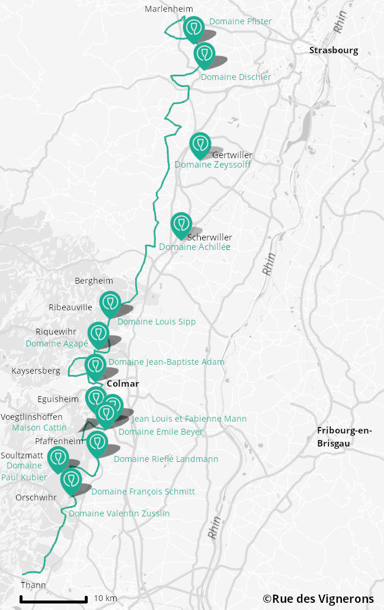

La route des vins d’Alsace : à la découverte des cépages alsaciens
La Route des Vins d’Alsace parcourt, entre la plaine du Rhin et les Ballons des Vosges, le vignoble millénaire
d’Alsace. Elle serpente à mi-coteau sur près de 170 kilomètres de Thann au Sud à Marlenheim au Nord. Elle égrène
un chapelet de villages pittoresques et fleuris, de cités viticoles réputées et offre de saisissants panoramas
qui illustrent la richesse et la diversité des terroirs d’Alsace. Une belle occasion de faire une dégustation de
vin, avec modération bien sûr…
Les Vosges veillent sur le vignoble alsacien
La culture de la vigne et du vin, indissociable de l’histoire
de la route des vins d’Alsace, est présente de manière vivante dans les paysages, les traditions et
le patrimoine. La barrière naturelle des Vosges qui favorise un micro-climat sec, l’exposition sud sud-est du
vignoble et la complexité géologique des sols offrent des conditions uniques à la vigne, et permettent notamment une
maturation lente et prolongée qui préserve les arômes du vin.
La route des vins d’Alsace, un incontournable à
déguster sans modération.
Ces conditions naturelles ne seraient rien sans la tradition humaine, sans la
culture des vignerons d’Alsace, faite de sérieux et d’épicurisme à la fois, et dont la réputation de bien vivre et
le sens de la fête ont largement dépassé les frontières.
L’une des plus anciennes de France
Route des Vins d’Alsace, l’une des plus anciennes de France, c’est aussi une multitude de villages.
Ainsi, nous vous proposons une liste de vins à déguster :
Gewurztraminers
Riesling
Pinot gris
Mais aussi, pour découvrir des endroits incontournables tout au long de votre expérience, nous vous proposons un circuit crée sur mesure pour nos vacanciers :

Markenheim et les Domaines Pfister et Dischier
Gertwiller et le Domaine Zeyssolff
Scherwiller et le Domaine Achillée
Ribeauvillé et le Domaine Louis Sipp
Riquewihr et le Domaine Agapé
Ammerschwihr et le Domaine Jean-Baptiste Adam
Eguisheim et les Domaines Jean Louis et Fabienne Mann et Emile Beyer
Voegtlinshoffen et le Domaine Maison Cattin
Pfaffenheim et le Domaine Rieflé Landmann
Soultzmatt et le Domaine Paul Kubler
Orschwhir et les Domaines Valentin Zusslin et François Schmitt
 La culture de la vigne et du vin, indissociable de l’histoire
de la route des vins d’Alsace, est présente de manière vivante dans les paysages, les traditions et
le patrimoine. La barrière naturelle des Vosges qui favorise un micro-climat sec, l’exposition sud sud-est du
vignoble et la complexité géologique des sols offrent des conditions uniques à la vigne, et permettent notamment une
maturation lente et prolongée qui préserve les arômes du vin.
La culture de la vigne et du vin, indissociable de l’histoire
de la route des vins d’Alsace, est présente de manière vivante dans les paysages, les traditions et
le patrimoine. La barrière naturelle des Vosges qui favorise un micro-climat sec, l’exposition sud sud-est du
vignoble et la complexité géologique des sols offrent des conditions uniques à la vigne, et permettent notamment une
maturation lente et prolongée qui préserve les arômes du vin.